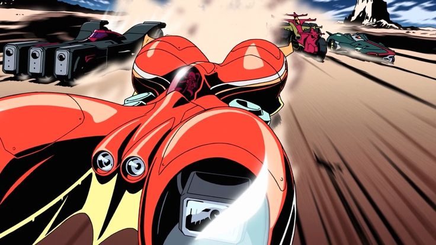

Redline’ın Hikâyesi
Redline, evrenin en tehlikeli ve en hızlı yarışını konu alır. JP adlı yarışçı, kuralları olmayan bu ölümcül yarışta hayatta kalmaya ve zafer kazanmaya çalışır. Film, hızın sınırlarını zorlayan görselliği ve neon atmosferiyle anime dünyasında eşsiz bir yere sahiptir.
Redline’ın Temaları
Hız ve Özgürlük: Redline, hızın yalnızca bir yarış değil, aynı zamanda özgürlük sembolü olduğunu gösterir.
Risk ve Cesaret: Yarışçılar, hayatlarını riske atarak sınırları zorlar.
Aşk ve Tutku: JP’nin motivasyonu yalnızca yarış değil, aynı zamanda tutkusu ve aşkıdır.
Teknoloji ve Kaos: Geleceğin dünyasında makineler ve insanlar arasındaki kaotik dengeyi yansıtır.
Redline’da Unutulmaz Anlar
JP’nin Son Yarışı: Filmin doruk noktası, hızın ve cesaretin birleştiği sahnedir.
Makina vs İnsan: Teknolojik araçların sınırları, insan iradesiyle karşı karşıya gelir.
Neon Pist Atmosferi: Görsel efektler ve neon renkler, Redline’ı unutulmaz kılar.
Redline’daki Karakterler
JP: Cesur ve tutkulu yarışçı.
Sonoshee: JP’nin rakibi ve aynı zamanda aşkı.
Makina Rakipleri: Teknolojiyle donatılmış ölümcül yarışçılar.
Destek Ekibi: JP’nin arkasındaki dostları ve mekanikerleri.

JP

Sonoshee
